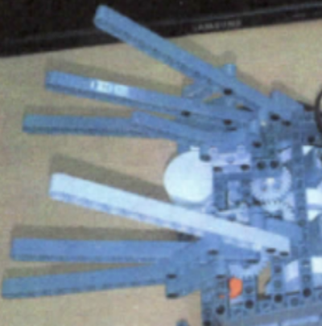

Implemented Functions

|
A function to Move Normally it moves forward, but if it gets close to a wall or detects a sound, it reverses and turns right. |

|
A function to Detect Distance A distance sensor detects if you are getting close to a wall. |

|
A function to Detect Sound The sound sensor detects whether a loud sound is heard. |
|  |
A function to Shake Wings When turning right after reversing, it flaps while waving its wings. |
Background and Purpose
I had a RobotC team project in our programming class. To create creative robots to serve people, to prepare them for becoming robotic engineers, we have created our own robots.
I had a RobotC team project in our programming class. To create creative robots to serve people, to prepare them for becoming robotic engineers, we have created our own robots.
What I Learned
- I learned how to use a motor, a distance sensor, and a sound sensor.
Process
- I assembled the robot based on the assembly instructions the teacher gave me.
- I looked at the functions of the robot and thought about which functions to add, but decided to add a function to shake its wings when it detects a sound. Therefore, I add an additional sound sensor.
- There was a motor control example in the print that the teacher gave me, but I modified this example to control the motor to shake the wings when it detects a sound or distance.
- In this way, I was able to implement the program I wanted.
My Role and a Thing to have Done my Best
Being responsible for implementing a program and the working principle of a peacock in RobotC
Being responsible for implementing a program and the working principle of a peacock in RobotC
Overall Structure

Used Skills
RobotC
RobotC
Development Environment
RobotC
RobotC
Further Explanations
- In 2012, I submitted it to the e-digital content department project presentation of Gunpo e-Business High School and received the Excellence Award.